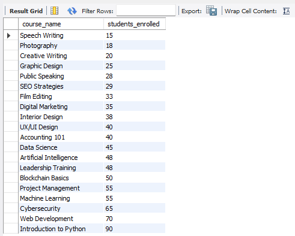
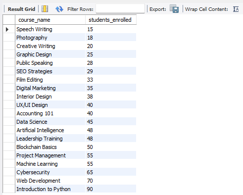

Finals Lab Task 3-1: Using MySQL Clause
This portfolio demonstrates the application of MySQL SELECT Clauses to query and retrieve data from a relational database. The task builds upon a predefined database structure and focuses on extracting meaningful insights using various SELECT statement features.
STEP BY STEP PROCESS
STEP 1
Launch MySQL Workbench or phpMyAdmin and start XAMPP to activate MySQL.
STEP 2
Open MySQL Workbench or phpMyAdmin and download/import the onlineCourse.sql file to initialize the tables and data.
STEP 3
- Create a database named
online_courseDB - Use the database created
STEP 4
Import the provided initial SQL structure (onlineCourse.sql) into the online_courseDB to load the necessary tables and sample data.
STEP 5
For each of the following tasks, write and execute the appropriate SELECT query to extract the required information:
- Task 1: Retrieve all courses where students enrolled is less than the enrollment limit
→ UseSELECTwith aWHEREclause to find courses wherestudents_enrolledis less thanenrollment_limit. - Task 2: Group courses by category and calculate the total number of students enrolled for each category
→ UseGROUP BYwith an aggregate function likeSUM(students_enrolled). - Task 3: Retrieve courses that are fully enrolled
→ UseSELECTwith aWHEREcondition to filter courses wherestudents_enrolledequalsenrollment_limit. - Task 4: Calculate the total number of students enrolled across all courses
→ Use an aggregate function likeSUM(students_enrolled). - Task 5: Sort courses by students enrolled in ascending order
→ UseORDER BY students_enrolled.
Query Statements (Screenshots)
.png)
.png)
.png)
.png)
.png)
Table Structures (Screenshots)
.png)
.png)
.png) 
